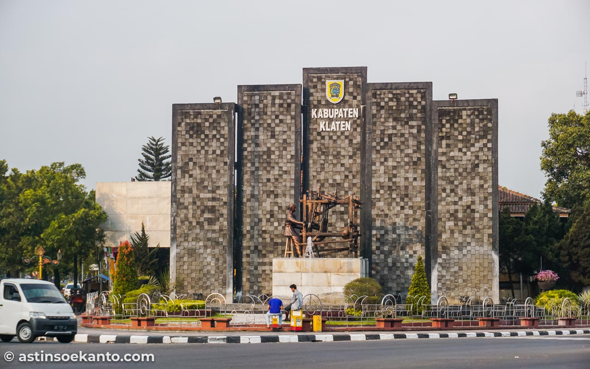

<div fxFill fxLayoutAlign="end end"  class="container">

  <div fxFlexAlign="end" class='welcome' 
    fxFlex.gt-sm="30" 
    fxFlex.md="100" 
    fxLayoutGap="10px"
    fxLayoutAlign="center center"
    fxLayout="column">
    <div fxLayoutAlign="center">
      
    </div>
    <div fxLayoutAlign="center center" style="text-align: center">
      <div class='title'>
        <h3>
          Sistem Informasi Tata Ruang
          <br>
          Kabupaten Klaten, Jawa Tengah
        </h3>
      </div>
    </div>

    <button mat-raised-button color="primary" routerLink="home">Masuk WebGIS</button>

    <div style="text-align: center; color:gray; padding-top: 10px;">
      <hr style="border-color:lightgray">
      <p>
        Dinas Pekerjaan Umum dan Penataan Ruang
      </p>
      <p>
        Kabupaten Klaten
      </p>
    </div>
    <div>

      <p style="text-align:center; color:gray"> 
        <small>
            Copyright @2019
        </small>
       </p>
    </div>
  </div>
</div>


<!--

<div fxFill class="container" id="videoDiv2">
  <div id="videoBlock2">
    
    <video preload="preload" id="video2" autoplay="autoplay" loop="loop">
      <source src="https://www.youtube.com/embed/tgbNymZ7vqY" type="video/mp4" />
    </video>
    <div id="videoMessageBox2">

      
      <div id="videoMessage2">
        
      </div>
    </div>
  </div>
</div>

-->


<!--
<video loop="loop" autoplay="autoplay" preload="auto">
          <source src="../../assets/images/bantul.mp4" type="video/mp4" />
        </video>

  


    <div fxLayout="row" style="padding: 20px" fxLayoutAlign="end">
      <div>
        <button matTooltip="Login Administrator" mat-fab color="primary" routerLink="login">
          <mat-icon>lock</mat-icon>
        </button>
      </div>
    </div>

    -->
